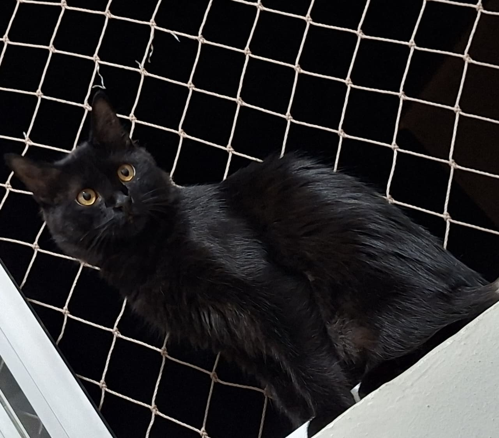

MAVIS
Raça Indefinida • Pelos PRETOS LOGOS, com a BARRIGA PRATA ESCURA e OLHOS AMARELOS • • Porte médio
Não possuí chip
Vacinas em dia
Dócil com pessoas, não gosta ou se assusta com outros animais
R$150,00
Por favor, mantenha o animal em local seguro e entre em contato. Se puder, envie foto(s) e local aproximado.